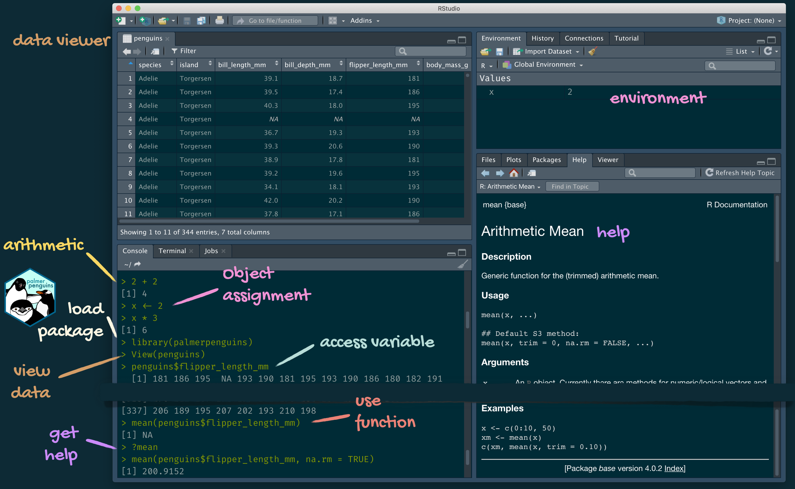
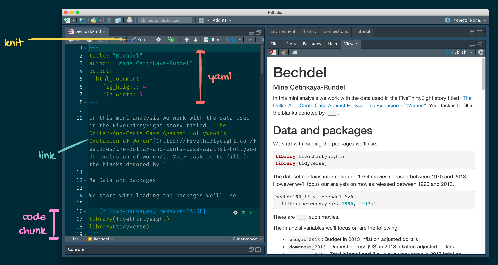

Meet the toolkit:
programming
Data Science in a Box
{r child = "../setup.Rmd"} #
Course toolkit
.pull-left[ ### .gray[Course operation] .gray[ - introds.org - Learn - Zoom - Teams - Piazza]] .pull-right[ ### .pink[Doing data science] - .pink[Programming:] - .pink[R] - .pink[RStudio] - .pinktidyverse - .pinkR Markdown - .gray[Version control and collaboration:] - .gray[Git] - .gray[GitHub]]
Learning goals
By the end of the course, you will be able to…
–
- gain insight from data
| - gain insight from data, reproducibly |
|---|
| - gain insight from data, reproducibly, using modern programming tools and techniques |
- gain insight from data, reproducibly and collaboratively, using modern programming tools and techniques
| - gain insight from data, reproducibly (with literate programming and version control) and collaboratively, using modern programming tools and techniques |
class: middle
Reproducible data analysis
Reproducibility checklist
.question[ What does it mean for a data analysis to be “reproducible”?]
–
Near-term goals:
- Are the tables and figures reproducible from the code and data?
- Does the code actually do what you think it does?
- In addition to what was done, is it clear why it was done?
Long-term goals:
- Can the code be used for other data?
- Can you extend the code to do other things?
Toolkit for reproducibility
- Scriptability \(\rightarrow\) R
- Literate programming (code, narrative, output in one place) \(\rightarrow\) R Markdown
- Version control \(\rightarrow\) Git / GitHub
class: middle
R and RStudio
R and RStudio
.pull-left[] .pull-right[]
R packages
Packages are the fundamental units of reproducible R code. They include reusable R functions, the documentation that describes how to use them, and sample data1
As of September 2020, there are over 16,000 R packages available on CRAN (the Comprehensive R Archive Network)2
We’re going to work with a small (but important) subset of these!
.footnote[ 1 Wickham and Bryan, R Packages.]
Tour: R and RStudio

A short list (for now) of R essentials
- Functions are (most often) verbs, followed by what they will be applied to in parentheses:
do_this(to_this)
do_that(to_this, to_that, with_those)–
- Packages are installed with the
install.packagesfunction and loaded with thelibraryfunction, once per session:
install.packages("package_name")
library(package_name)R essentials (continued)
- Columns (variables) in data frames are accessed with
$:
.small[]
–
- Object documentation can be accessed with
?
?meantidyverse
.pull-left[]
.pull-right[ .center[.large[ tidyverse.org]]]
rmarkdown
.pull-left[ .center[.large[ rmarkdown.rstudio.com]]]
.pull-right[]
class: middle
R Markdown
R Markdown
- Fully reproducible reports – each time you knit the analysis is ran from the beginning
- Simple markdown syntax for text
- Code goes in chunks, defined by three backticks, narrative goes outside of chunks
Tour: R Markdown

Environments
.tip[ The environment of your R Markdown document is separate from the Console!]
Remember this, and expect it to bite you a few times as you’re learning to work with R Markdown!
Environments
.pull-left[ First, run the following in the console]
–
.pull-right[ Then, add the following in an R chunk in your R Markdown document]
R Markdown help
.pull-left[ .center[ .midi[R Markdown Cheat Sheet
Help -> Cheatsheets]]] .pull-right[ .center[ .midi[Markdown Quick Reference
Help -> Markdown Quick Reference]]]
How will we use R Markdown?
- Every assignment / report / project / etc. is an R Markdown document
- You’ll always have a template R Markdown document to start with
- The amount of scaffolding in the template will decrease over the semester
What’s with all the hexes?

.footnote[ Mitchell O’Hara-Wild, useR! 2018 feature wall]
.your-turn[ .light-blue[.hand[Your turn:]] AE 02 - Bechdel + R Markdown - The Bechdel test asks whether a work of fiction features at least two women who talk to each other about something other than a man, and there must be two women named characters. - Go to RStudio Cloud and start the assignment AE 02 - Bechdel + R Markdown. - Open and knit the R Markdown document bechdel.Rmd, review the document, and fill in the blanks.]